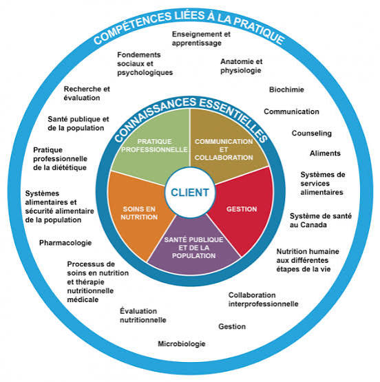

Mes compétences
Développement web
Architecture front-end, responsable design et intégration des systèmes complexes. Maîtrise des écosystèmes modernes pour des applications performantes.
Nutrition communautaire

Analyse des besoins nutritionnels et mise en place des programmes de santé publique. Expertise en intervention à impact social.
Agribusiness
Optimisation des chaînes de valeur agricole par le numérique. Transition technologique pour une agriculture durable et rentable.
Suivi-évaluation
Monitoring d'indicateurs de performance et analyses d'impact de projet. Tableaux de bord et rapports analytiques pour la prise de décision.